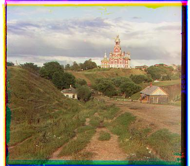
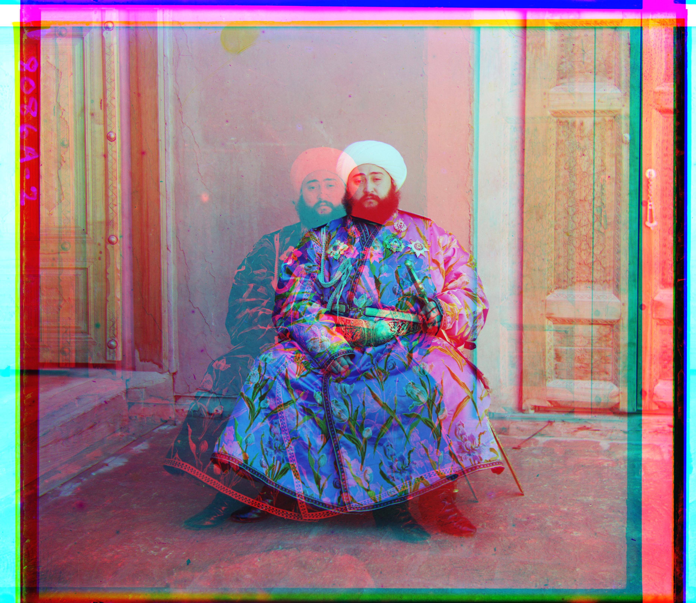
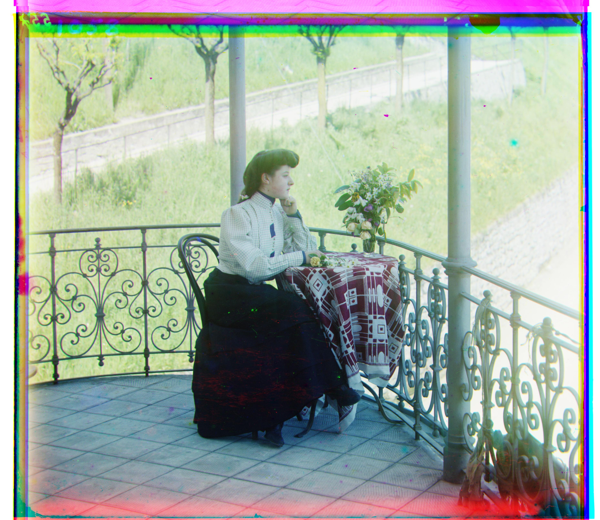
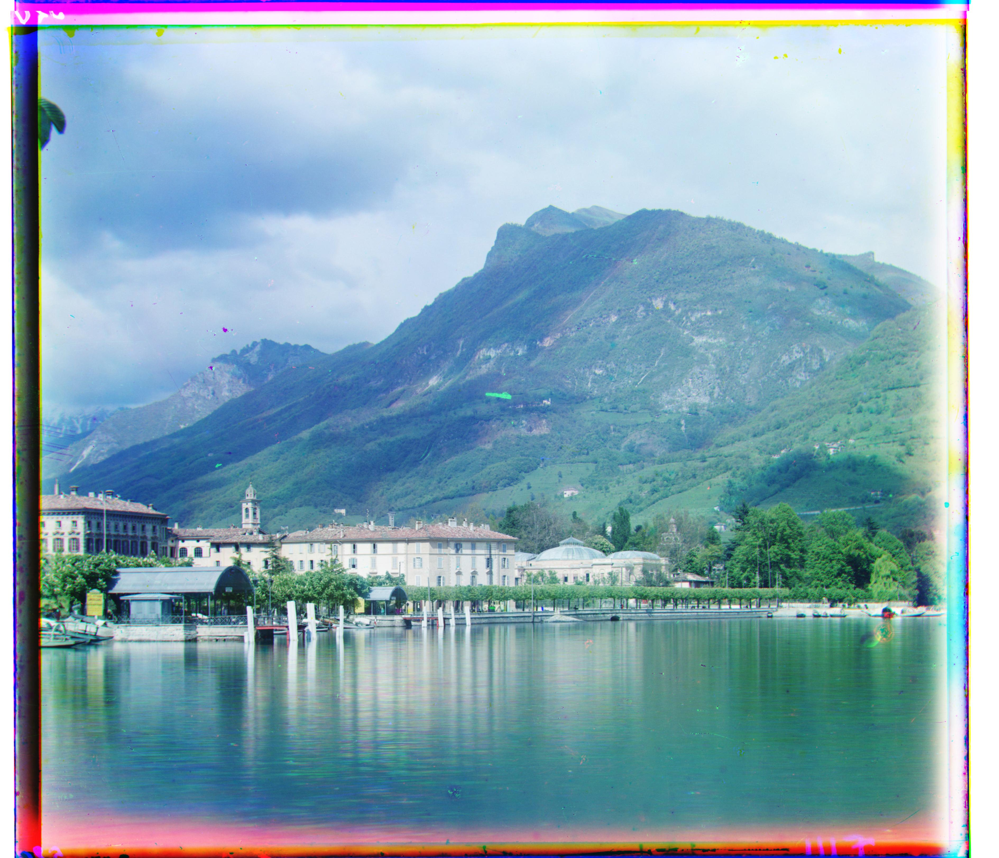
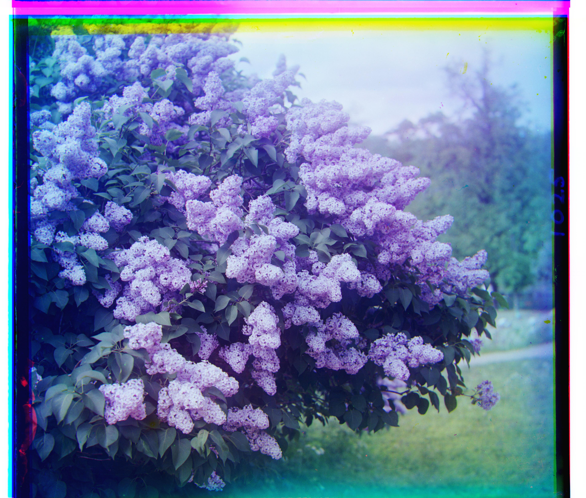

cathedral
Offset G: (x=+2, y=+5) · Offset R: (x=+3, y=+11)
 church
church
Offset G: (x=+4, y=+25) · Offset R: (x=-4, y=+58)

emir
Offset G: (x=+24, y=+49) · Offset R: (x=-205, y=+141)
 harvesters
harvesters
Offset G: (x=+17, y=+60) · Offset R: (x=+13, y=+124)
 icon
icon
Offset G: (x=+17, y=+41) · Offset R: (x=+23, y=+89)

italil
Offset G: (x=+21, y=+38) · Offset R: (x=+35, y=+76)
 lastochikino
lastochikino
Offset G: (x=-2, y=-3) · Offset R: (x=-9, y=+75)

lugano
Offset G: (x=-16, y=+41) · Offset R: (x=-29, y=+93)
 melons
melons
Offset G: (x=+11, y=+82) · Offset R: (x=+13, y=+178)
 monastery
monastery
Offset G: (x=+2, y=-3) · Offset R: (x=+2, y=+3)
 self_portrait
self_portrait
Offset G: (x=+29, y=+79) · Offset R: (x=+37, y=+176)

siren
Offset G: (x=-6, y=+49) · Offset R: (x=-25, y=+96)
 three_generations
three_generations
Offset G: (x=+14, y=+53) · Offset R: (x=+11, y=+112)
 tobolsk
tobolsk
Offset G: (x=+3, y=+3) · Offset R: (x=+3, y=+6)